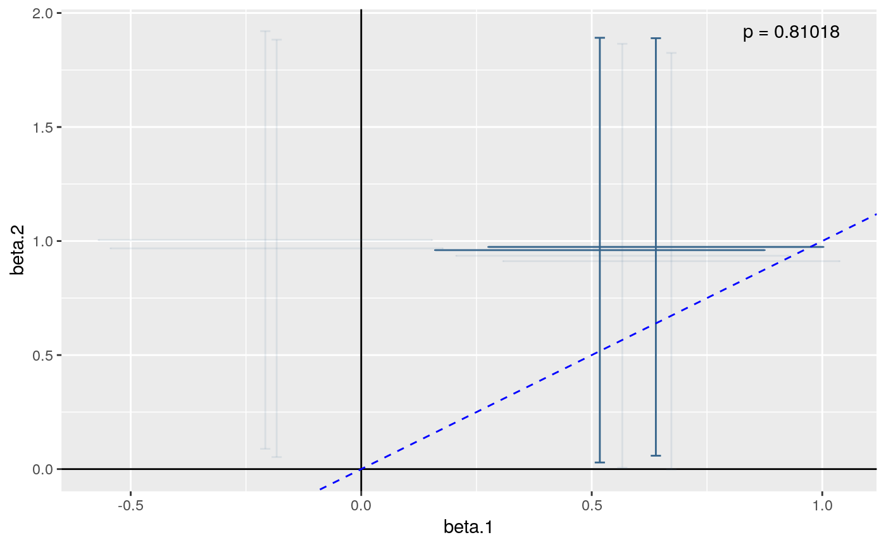

R/bma.R
coloc.bma.RdPerforms the colocalisation tests described in Plagnol et al (2009) and Wallace et al (2012).
coloc.bma(df1, df2, snps = intersect(setdiff(colnames(df1), c(response1, stratum1)), setdiff(colnames(df2), c(response2, stratum2))), response1 = "Y", response2 = "Y", stratum1 = NULL, stratum2 = NULL, family1 = "binomial", family2 = "binomial", bayes = !is.null(bayes.factor), thr = 0.01, nsnps = 2, n.approx = 1001, bayes.factor = NULL, plot.coeff = FALSE, r2.trim = 0.95, quiet = FALSE, bma = FALSE, ...)
| df1, df2 | Each is a dataframe, containing response and potential explanatory variables for two independent datasets. |
|---|---|
| snps | The SNPs to consider as potential explanatory variables |
| response1, response2 | The names of the response variables in
|
| stratum1 | optional column name of df1 that gives stratum information |
| stratum2 | optional column name of df2 that gives stratum information |
| family1, family2 | the error family for use in |
| bayes | Logical, indicating whether to perform Bayesian
inference for the coefficient of proportionality, eta. If
|
| thr | posterior probability threshold used to trim SNP list. Only SNPs with a marginal posterior probability of inclusion greater than this with one or other trait will be included in the full BMA analysis |
| nsnps | number of SNPs required to model both traits. The BMA
analysis will average over all possible |
| n.approx | number of values at which to numerically approximate the posterior |
| bayes.factor | if true, compare specific models |
| plot.coeff | deprecated |
| r2.trim | for pairs SNPs with r2> |
| quiet | suppress messages about how the model spaced is trimmed for BMA |
| bma | if true (default), average over models |
| ... | other parameters passed to |
a coloc or colocBayes object
This is a test for proportionality of regression coefficients from two
independent regressions. Analysis can either be based on a profile
likelihood approach, where the proportionality coefficient, eta, is
replaced by its maximum likelihood value, and inference is based on a
chisquare test (p.value), or taking a hybrid-Bayesian approach and
integrating the p value over the posterior distribution of eta, which
gives a posterior predictive p value. The Bayesian approach can also be used
to give a credible interval for eta. See the references below for
further details.
Wallace et al (2012). Statistical colocalisation of monocyte gene expression and genetic risk variants for type 1 diabetes. Hum Mol Genet 21:2815-2824. http://europepmc.org/abstract/MED/22403184
Plagnol et al (2009). Statistical independence of the colocalized association signals for type 1 diabetes and RPS26 gene expression on chromosome 12q13. Biostatistics 10:327-34. http://www.ncbi.nlm.nih.gov/pubmed/19039033
## simulate covariate matrix (X) and continuous response vector (Y) ## for two populations/triats Y1 and Y2 depend equally on f1 and f2 ## within each population, although their distributions differ between ## populations. They are compatible with a null hypothesis that they ## share a common causal variant set.seed(1) X1 <- matrix(rbinom(2000,1,0.4),ncol=4) Y1 <- rnorm(500,rowSums(X1[,1:2]),2) X2 <- matrix(rbinom(2000,1,0.6),ncol=4) Y2 <- rnorm(500,rowSums(X2[,1:2]),5) boxplot(list(Y1,Y2),names=c("Y1","Y2"))## fit and store linear model objects colnames(X1) <- colnames(X2) <- sprintf("f%s",1:ncol(X1)) summary(lm1 <- lm(Y1~f1+f2+f3+f4,data=as.data.frame(X1)))#> #> Call: #> lm(formula = Y1 ~ f1 + f2 + f3 + f4, data = as.data.frame(X1)) #> #> Residuals: #> Min 1Q Median 3Q Max #> -6.4771 -1.4158 -0.0845 1.3748 7.1976 #> #> Coefficients: #> Estimate Std. Error t value Pr(>|t|) #> (Intercept) 0.2863 0.1680 1.704 0.08903 . #> f1 0.6611 0.1855 3.565 0.00040 *** #> f2 0.5185 0.1819 2.850 0.00455 ** #> f3 0.3080 0.1851 1.664 0.09670 . #> f4 -0.2047 0.1823 -1.123 0.26196 #> --- #> Signif. codes: 0 ‘***’ 0.001 ‘**’ 0.01 ‘*’ 0.05 ‘.’ 0.1 ‘ ’ 1 #> #> Residual standard error: 1.996 on 495 degrees of freedom #> Multiple R-squared: 0.04906, Adjusted R-squared: 0.04137 #> F-statistic: 6.384 on 4 and 495 DF, p-value: 5.152e-05 #>#> #> Call: #> lm(formula = Y2 ~ f1 + f2 + f3 + f4, data = as.data.frame(X2)) #> #> Residuals: #> Min 1Q Median 3Q Max #> -13.6564 -3.1427 0.0631 3.2446 13.5783 #> #> Coefficients: #> Estimate Std. Error t value Pr(>|t|) #> (Intercept) -0.8462 0.6420 -1.318 0.1881 #> f1 1.0047 0.4658 2.157 0.0315 * #> f2 1.0072 0.4736 2.127 0.0339 * #> f3 0.5396 0.4735 1.139 0.2551 #> f4 1.0390 0.4663 2.228 0.0263 * #> --- #> Signif. codes: 0 ‘***’ 0.001 ‘**’ 0.01 ‘*’ 0.05 ‘.’ 0.1 ‘ ’ 1 #> #> Residual standard error: 5.119 on 495 degrees of freedom #> Multiple R-squared: 0.02742, Adjusted R-squared: 0.01957 #> F-statistic: 3.489 on 4 and 495 DF, p-value: 0.007988 #>## test colocalisation using bma df1=as.data.frame(cbind(Y1=Y1,X1)) df2=as.data.frame(cbind(Y2=Y2,X2)) result <- coloc.bma( df1, df2, snps=colnames(X1), response1="Y1", response2="Y2", family1="gaussian", family2="gaussian", nsnps=2,bayes.factor=c(1,2,3))#>#>#> Warning: Recycling array of length 1 in vector-array arithmetic is deprecated. #> Use c() or as.vector() instead.#> Warning: Recycling array of length 1 in vector-array arithmetic is deprecated. #> Use c() or as.vector() instead.#> Warning: Recycling array of length 1 in vector-array arithmetic is deprecated. #> Use c() or as.vector() instead.#> Warning: Recycling array of length 1 in vector-array arithmetic is deprecated. #> Use c() or as.vector() instead.#> Warning: Recycling array of length 1 in vector-array arithmetic is deprecated. #> Use c() or as.vector() instead.#> Warning: Recycling array of length 1 in vector-array arithmetic is deprecated. #> Use c() or as.vector() instead.#> Warning: Recycling array of length 1 in vector-array arithmetic is deprecated. #> Use c() or as.vector() instead.#> Warning: Recycling array of length 1 in vector-array arithmetic is deprecated. #> Use c() or as.vector() instead.#>#>#>#> Fitting 5 multi SNP models to dataset 1#> Warning: Recycling array of length 1 in vector-array arithmetic is deprecated. #> Use c() or as.vector() instead.#> Warning: Recycling array of length 1 in vector-array arithmetic is deprecated. #> Use c() or as.vector() instead.#> Warning: Recycling array of length 1 in vector-array arithmetic is deprecated. #> Use c() or as.vector() instead.#> Warning: Recycling array of length 1 in vector-array arithmetic is deprecated. #> Use c() or as.vector() instead.#> Warning: Recycling array of length 1 in vector-array arithmetic is deprecated. #> Use c() or as.vector() instead.#> Fitting 5 multi SNP models to dataset 2#> Warning: Recycling array of length 1 in vector-array arithmetic is deprecated. #> Use c() or as.vector() instead.#> Warning: Recycling array of length 1 in vector-array arithmetic is deprecated. #> Use c() or as.vector() instead.#> Warning: Recycling array of length 1 in vector-array arithmetic is deprecated. #> Use c() or as.vector() instead.#> Warning: Recycling array of length 1 in vector-array arithmetic is deprecated. #> Use c() or as.vector() instead.#> Warning: Recycling array of length 1 in vector-array arithmetic is deprecated. #> Use c() or as.vector() instead.#> Averaging coloc testing over 3 models with posterior probabilities >= 2e-08 #> ...result#> eta.hat n ppp.value #> 1.6564113 2.0000000 0.8085261plot(result)## test colocalisation when one dataset contains a stratifying factor in column named "s" df1$s <- rbinom(500,1,0.5) result <- coloc.bma( df1, df2, snps=colnames(X1), response1="Y1", response2="Y2", stratum1="s", family1="gaussian", family2="gaussian", nsnps=2,bayes.factor=c(1,2,3))#>#>#> Warning: Recycling array of length 1 in vector-array arithmetic is deprecated. #> Use c() or as.vector() instead.#> Warning: Recycling array of length 1 in vector-array arithmetic is deprecated. #> Use c() or as.vector() instead.#> Warning: Recycling array of length 1 in vector-array arithmetic is deprecated. #> Use c() or as.vector() instead.#> Warning: Recycling array of length 1 in vector-array arithmetic is deprecated. #> Use c() or as.vector() instead.#> Warning: Recycling array of length 1 in vector-array arithmetic is deprecated. #> Use c() or as.vector() instead.#> Warning: Recycling array of length 1 in vector-array arithmetic is deprecated. #> Use c() or as.vector() instead.#> Warning: Recycling array of length 1 in vector-array arithmetic is deprecated. #> Use c() or as.vector() instead.#> Warning: Recycling array of length 1 in vector-array arithmetic is deprecated. #> Use c() or as.vector() instead.#> Warning: Recycling array of length 1 in vector-array arithmetic is deprecated. #> Use c() or as.vector() instead.#> Warning: Recycling array of length 1 in vector-array arithmetic is deprecated. #> Use c() or as.vector() instead.#> Warning: Recycling array of length 1 in vector-array arithmetic is deprecated. #> Use c() or as.vector() instead.#> Warning: Recycling array of length 1 in vector-array arithmetic is deprecated. #> Use c() or as.vector() instead.#>#>#>#> Fitting 6 multi SNP models to dataset 1#> Warning: Recycling array of length 1 in vector-array arithmetic is deprecated. #> Use c() or as.vector() instead.#> Warning: Recycling array of length 1 in vector-array arithmetic is deprecated. #> Use c() or as.vector() instead.#> Warning: Recycling array of length 1 in vector-array arithmetic is deprecated. #> Use c() or as.vector() instead.#> Warning: Recycling array of length 1 in vector-array arithmetic is deprecated. #> Use c() or as.vector() instead.#> Warning: Recycling array of length 1 in vector-array arithmetic is deprecated. #> Use c() or as.vector() instead.#> Warning: Recycling array of length 1 in vector-array arithmetic is deprecated. #> Use c() or as.vector() instead.#> Fitting 6 multi SNP models to dataset 2#> Warning: Recycling array of length 1 in vector-array arithmetic is deprecated. #> Use c() or as.vector() instead.#> Warning: Recycling array of length 1 in vector-array arithmetic is deprecated. #> Use c() or as.vector() instead.#> Warning: Recycling array of length 1 in vector-array arithmetic is deprecated. #> Use c() or as.vector() instead.#> Warning: Recycling array of length 1 in vector-array arithmetic is deprecated. #> Use c() or as.vector() instead.#> Warning: Recycling array of length 1 in vector-array arithmetic is deprecated. #> Use c() or as.vector() instead.#> Warning: Recycling array of length 1 in vector-array arithmetic is deprecated. #> Use c() or as.vector() instead.#> Averaging coloc testing over 3 models with posterior probabilities >= 2.2e-08 #> ...result#> eta.hat n ppp.value #> 1.658547 2.000000 0.810177plot(result)